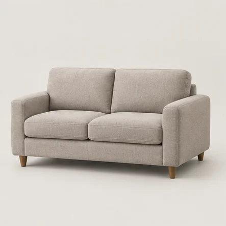
01Sofa 2-osobowa
Dwa miejsca siedzące
160 zł
GDAŃSK · SOPOT · GDYNIA
Profesjonalne pranie tapicerki u Ciebie w domu. Ty wybierasz mebel. My zajmujemy się resztą.
01 — USŁUGI I CENNIK
Bez zgadywania, co oznacza „duża kanapa”.
Wybierz podobny kształt i liczbę miejsc.

01Dwa miejsca siedzące
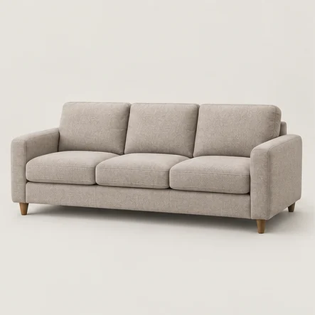
02Trzy lub cztery miejsca
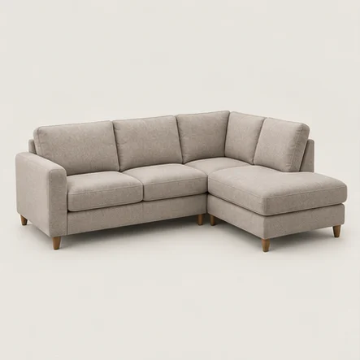
034–5 miejsc · jeden szezlong
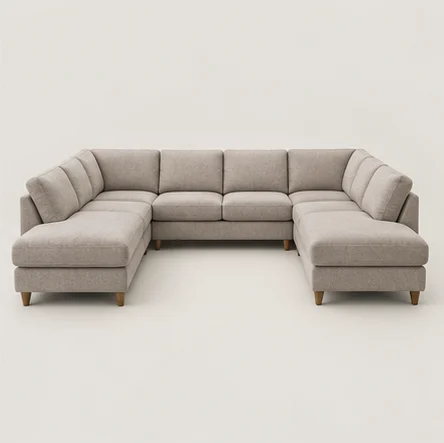
04Dwa szezlongi · kształt U
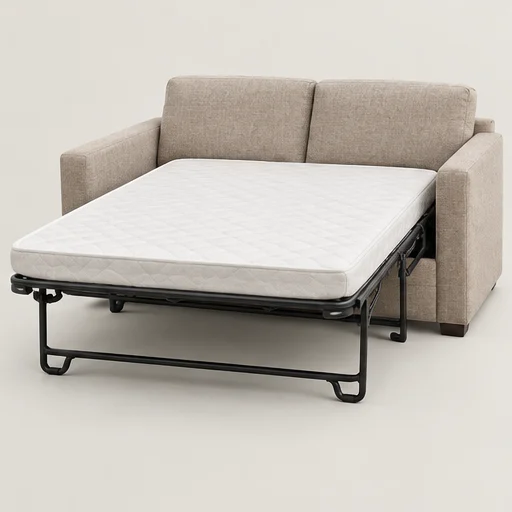
05Dodatkowo do prania kanapy
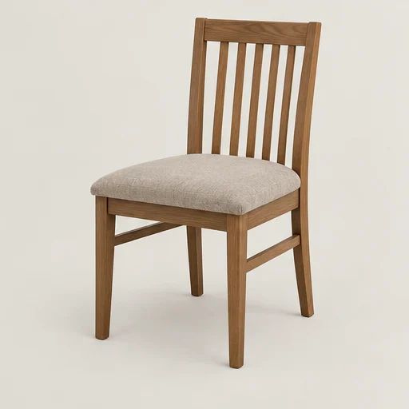
06Pranie bez oparcia
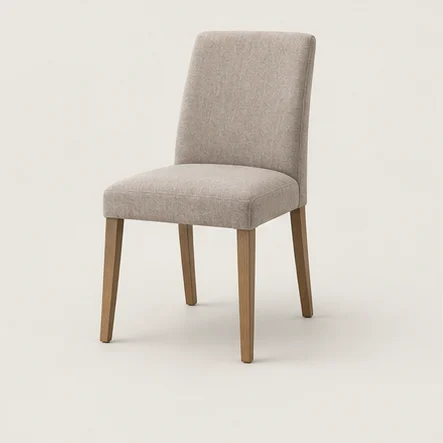
07Siedzisko i oparcie
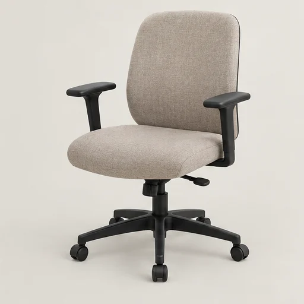
08Tapicerowany fotel do pracy
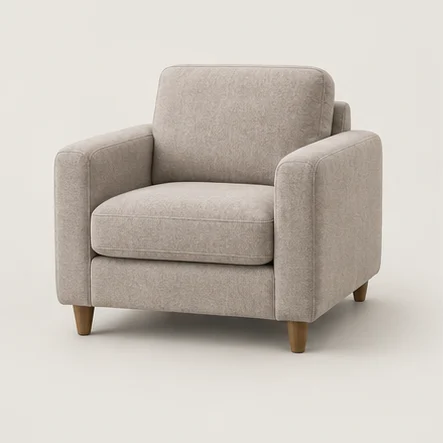
09Jedno wygodne miejsce
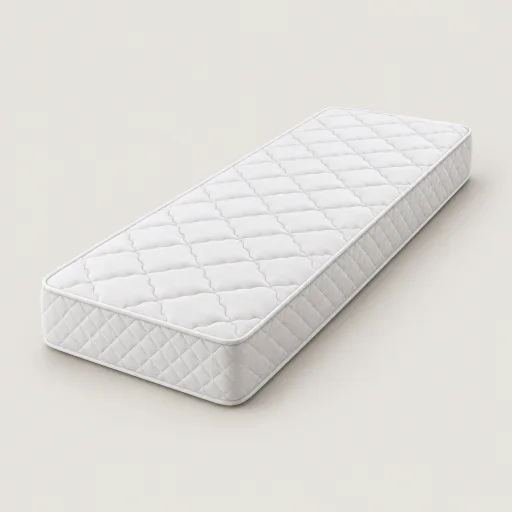
101 strona / 2 strony
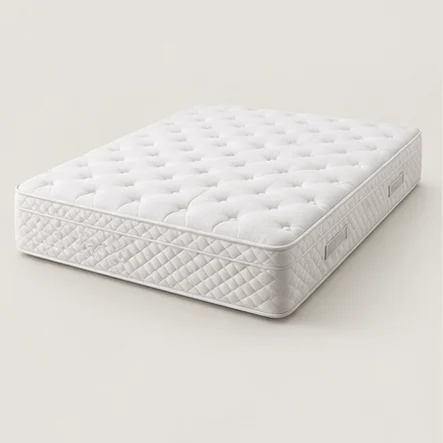
111 strona / 2 strony
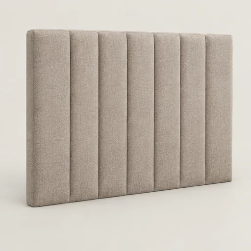
12Tapicerowane wezgłowie
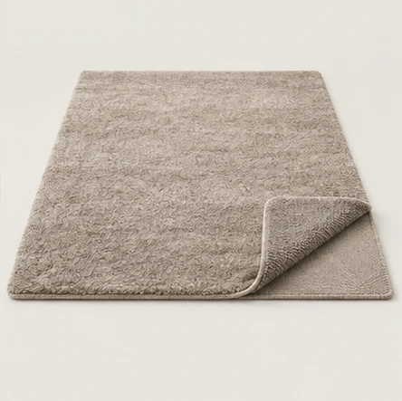
13Cena za metr kwadratowy
Zdjęcia przedstawiają przykładowe typy mebli. Ceny są orientacyjne — ostateczną wycenę potwierdzamy po poznaniu rozmiaru, tkaniny i zabrudzeń. Usługi poniżej 150 zł można łączyć w jednym zamówieniu.
Opisz go w formularzu. Dobierzemy usługę i potwierdzimy cenę.
02 — EFEKTY PRANIA
Tapicerka przed i po czyszczeniu.
Przesuń suwak i zobacz efekt prania.
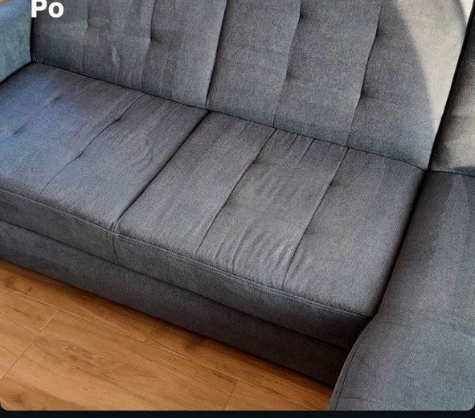
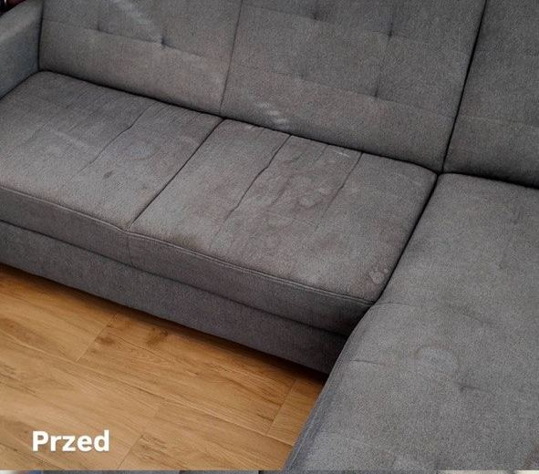
PRZEDPO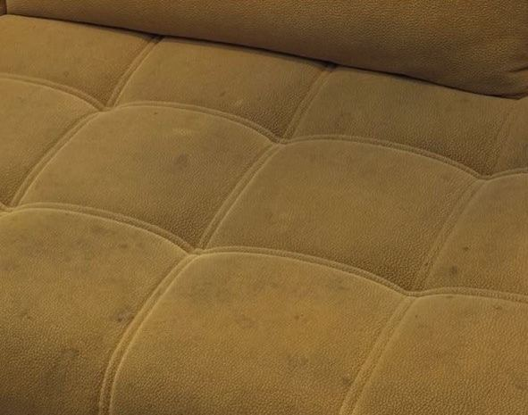
PRZED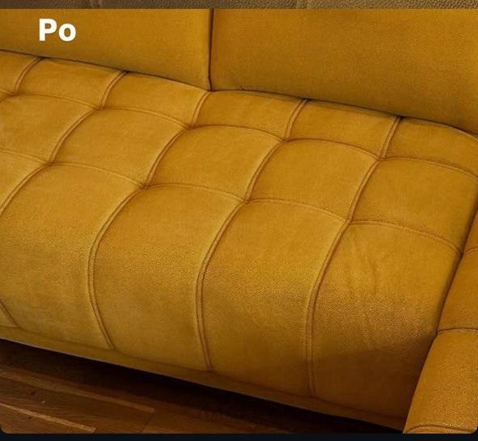
PONie każda plama znika w całości.
Możliwości czyszczenia oceniamy przed pracą.
OPINIE KLIENTÓW
„Praca została wykonana szybko i sprawnie. Polecam!”
„Polecam 😊”
„Pan bardzo mily, punktualny i bardzo dokladny.”
Wybrane fragmenty opinii. Oryginalna pisownia.
Otwórz profil Google ↗03 — PROSTO, OD POCZĄTKU
Zaznacz usługę w cenniku lub zadzwoń. Możesz dodać kilka mebli do jednego zapytania.
Potwierdzamy cenę, adres i dogodny termin. Wysłanie formularza jest zapytaniem o dostępność.
Czyścimy tapicerkę na miejscu. Po pracy wyjaśniamy, jak zadbać o schnięcie i świeżość mebla.
BLISKO CIEBIE
Gdańsk, Sopot czy Gdynia — przy zamówieniu od 150 zł przyjeżdżamy bez opłaty za dojazd.
Sprawdź dostępny termin ↗Kanapa 2-osobowa kosztuje 160 zł, kanapa 3–4-osobowa 180–200 zł, narożnik 4–5-osobowy 220–240 zł, a narożnik U od 240 zł. Cenę potwierdzamy po ustaleniu szczegółów. Zobacz cały cennik.
Tak. Dojeżdżamy bezpłatnie na terenie Gdańska, Sopotu i Gdyni. Minimalna wartość zamówienia wynosi 150 zł.
Minimalna wartość całego zamówienia wynosi 150 zł. Możesz połączyć pranie kilku krzeseł, fotela, materaca lub innych mebli podczas jednej wizyty.
Czas zależy od tkaniny, ilości wilgoci, temperatury i wentylacji. Warto zarezerwować czas na schnięcie i nie korzystać z mebla, dopóki nie będzie suchy. Wskazówki otrzymasz po czyszczeniu.
Nie wszystkie plamy można całkowicie usunąć. Znaczenie mają rodzaj zabrudzenia, czas jego powstania i wcześniejsze próby czyszczenia. Stan materiału i możliwy efekt omawiamy przed rozpoczęciem pracy.
Zapewnij dostęp do mebla, wody i prądu. Usuń z tapicerki rzeczy osobiste i drobne przedmioty. Jeśli nie wiesz, czy materiał nadaje się do prania, wspomnij o tym w zapytaniu.
Formularz wysyła zapytanie. Kontaktujemy się z Tobą, aby potwierdzić cenę oraz dzień i godzinę wizyty. Nie pobieramy płatności przez stronę.
05 — ZRÓB MIEJSCE NA ŚWIEŻOŚĆ
Opowiedz, co chcesz wyczyścić.
Skontaktujemy się, żeby ustalić szczegóły.